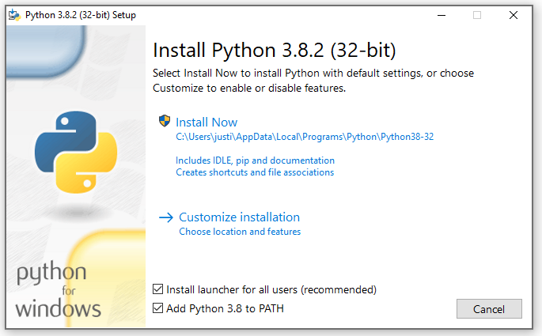

Prerequisite Software Package Installation¶
The following links are provided for guidance on installing the prerequisite software.
MacOS and Linux¶
python version 3.5 or above from https://www.python.org. Support for Python 2.7.13 or above is also maintained, but with its End of Life, Python 3 is recommended.
MacOS comes with an old version of python 2 which is incompatible with the Gro API client. See the following link for installing Python 3 on MacOS without disrupting the base install
Windows¶
The Gro API Client package is supported both with or without Anaconda. However, some popular data science packages, including some used in the sample scripts provided, are only available on Windows via conda. For that reason, instructions are provided for both. You should select the distribution that fits your requirements.
Anaconda¶
Download Anaconda with Python 3.5 or above from anaconda.com Support for Python 2.7.13 or above is also maintained, but with its End of Life, it is recommended you start with Python 3.
Install Git from git-scm.com. Proceed with the default options.
See additional information related to Anaconda if Anaconda is not installed in the default directory (C:Users<your-username>) or if your environment uses a proxy or firewall in connections to the internet.
Non-Anaconda¶
Powershell (should come default with Windows)
Download Python version 3.5 or above from python.org. Support for Python 2.7.13 or above is also maintained, but with its End of Life, it is recommended you start with Python 3.
Install both Python and pip to PATH either in the installer (enable component during the installation) or manually. The easiest way to do this is to make sure the below is checked during installation:
Install Git from git-scm.com. Proceed with the default options.